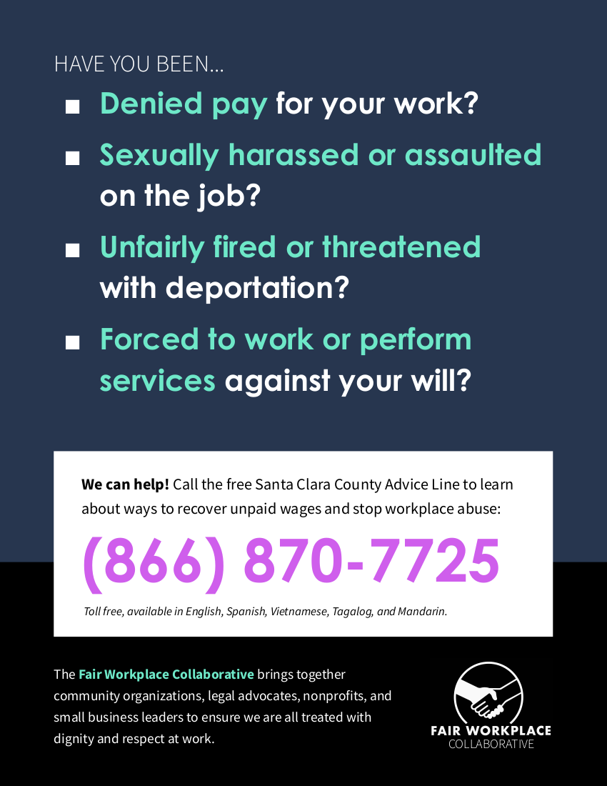
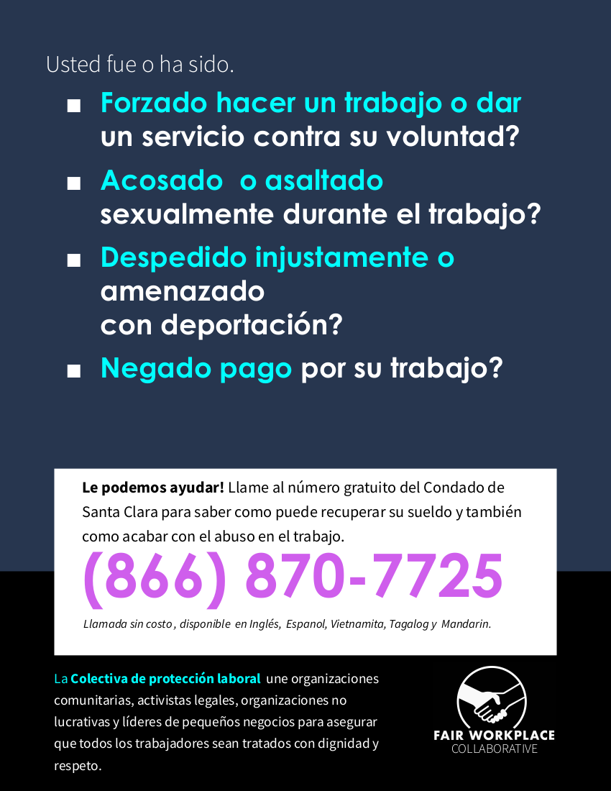

<section>
<div class="row">
    <div class="columns small-12 hide-for-medium">
      {% include resource_menu.html %}
    </div>
    <div class="left-subnav medium-3 columns hide-for-small-only" data-sticky-container>
      <nav class="columns sticky" data-sticky data-top-anchor="positions" data-btm-anchor="clsepa" data-sticky-on="medium">
        <div id='nav-magellan' data-magellan>
          {% include resource_menu.html %}
        </div>
      </nav>
    </div>
    <div id="positions" class="medium-9 columns">
      <h1>Helpful Resources</h1>

      <p class="description">
       There are many City of Mountain View departments, divisions, and services, and it can be challenging to find the resource that you need. Additionally, there are other governmental agencies and organizations that serve Mountain View residents. This is an ongoing project and will take some time to complete. If you have any requests or recommendations for additional resources to include, please email me at <a href="mailto:lucas@ramirezforcouncil.com" target="_blank">lucas@ramirezforcouncil.com</a> or <a href="https://github.com/RamirezforCouncil/RamirezforCouncil.github.io" target="_blank">submit a pull request or issue through GitHub</a>.
      </p>
      <h3 data-magellan-target><u>Quick Links</u></h3>
	  <a class="button button-rounded-hover" href="2019GuidetoCityPhone.pdf" target="_blank">2019 City Phone Numbers</a> <a class="button button-rounded-hover" href="https://www.mountainview.gov/council/future_agenda_items.asp" target="_blank">Future Agenda Items</a><a class="button button-rounded-hover" href=" https://www.mountainview.gov/contact/services.asp" target="_blank">City Services</a> <a class="button button-rounded-hover" href="#works">Public Works Updates</a> <a class="button button-rounded-hover" href="https://mountainview.opengov.com/" target="_blank">Open Budget Tool</a> <a class="button button-rounded-hover" href="http://data-mountainview.opendata.arcgis.com/" target="_blank">GIS Open Data Portal</a> <a class="button button-rounded-hover" href="https://www.mountainview.gov/mymv/" target="_blank">Subscribe for City Email Distribution List</a> <a class="button button-rounded-hover" href="https://clients.comcate.com/newrequest.php?id=128" target="_blank">Ask Mountain View</a> <a class="button button-rounded-hover" href="#planning">Planning Updates</a><br>
      <h3 data-magellan-target><u>City Resources</u></h3>
      <h4 id="council" data-magellan-target="caltrain">Contact City Council</h4>
      <div class="inner">
        <p>
          Your civic participation is encouraged and appreciated. Please feel free to email the Council directly to share your thoughts and ideas: <br><a href="mailto:city.council@mountainview.gov">city.council@mountainview.gov</a> <br><a href="mailto:Lisa.Matichak@mountainview.gov">Lisa.Matichak@mountainview.gov</a> <br><a href="mailto:Margaret.Abe-Koga@mountainview.gov">Margaret.Abe-Koga@mountainview.gov</a> <br><a href="mailto:Chris.Clark@mountainview.gov">Chris.Clark@mountainview.gov</a> <br><a href="mailto:John.McAlister@mountainview.gov">John.McAlister@mountainview.gov</a> <br><a href="mailto:Alison.Hicks@mountainview.gov">Alison.Hicks@mountainview.gov</a> <br><a href="mailto:Ellen.Kamei@mountainview.gov">Ellen.Kamei@mountainview.gov</a> <br><a href="mailto:Lucas.Ramirez@mountainview.gov">Lucas.Ramirez@mountainview.gov</a> <br></p>
      </div>

      <h4 id="ask" data-magellan-target="ask">Ask Mountain View</h4>
      <div class="inner">
        <p>The City offers an online way to enable residents and visitors to quickly and easily email staff with questions, concerns, and compliments 24-hours-a-day, 7-days-a-week. The City’s <b><a href="https://clients.comcate.com/newrequest.php?id=128" target="_blank">Ask Mountain View</a></b> platform provides a list of topic area designations so questions can be routed to the correct City department and staff member, helping to ensure a speedy reply during regular business hours.
        </p>
      </div>

      <h4 id="homeless" data-magellan-target="homeless">Homelessness Updates</h4>
      <div class="inner">
        <p>Information regarding City efforts to address homelessness, including resources and services. <a href="https://www.mountainview.gov/depts/comdev/preservation/living_in_vehicles_and_homeless_information.asp" target="_blank">View information on city website</a></p>
      </div>

      <h4 id="planning" data-magellan-target="planning">Planning Department</h4>
      <div class="inner">
        <p>The City of Mountain View Planning Division prepares a monthly report of private development projects and long range planning studies that are underway.  The projects are organized by Status - Under Review, Approved, and Under Construction. You can find the most up-to-date report on the City of Mountain View <a href="https://www.mountainview.gov/news/displaynews.asp?NewsID=793&TargetID=10" target="_blank">Planning Division page</a>.</p>
      </div>

      <h4 id="collaborate" data-magellan-target="collaborate">Collaborate Mountain View</h4>
      <div class="inner">
        <p>We are excited to officially introduce you to <a href="https://collaborate.mountainview.gov/" target="_blank">Collaborate Mountain View</a>, <b>a new engagement platform for the City’s sustainability efforts!</b> This new website gives community members an opportunity for quick, easy engagement with the City. Get updates on sustainability projects (e.g. buildings, energy, zero waste, transportation), provide input, share stories, answer surveys, and more. </p>
		<p>New projects that you won't want to miss will be posted on <a href="https://collaborate.mountainview.gov/" target="_blank">Collaborate Mountain View</a> in the coming months as we begin implementing Sustainability Action Plan 4. </p>
		<p>Please join us and make your voice heard by registering at <a href="https://collaborate.mountainview.gov/" target="_blank">Collaborate.MountainView.gov</a>!</p>
		<p>Sign up to recieve sustainability email updates from the city <a href="https://visitor.r20.constantcontact.com/manage/optin?v=001_gzs_qnKEI7cJ-myoFnENOTu3vSDMG-cdluL9eREYRy2weU1mqeQFQPdqXYT-sNnbovbpArBpxgbPHHt8FNWgDr7L7sBK5gIyV_cPAaDtxo%3D" target="_blank">here</a>.</p>
      </div>

      <h4 id="works" data-magellan-target="works">Public Works Department</h4>
      <div class="inner">
        <p>The Public Works Department posts regular updates regarding major City infrastructure projects <a href="https://www.mountainview.gov/depts/pw/projects/highlights.asp" target="_blank">here</a>.<br>
		<a href="https://www.mountainview.gov/depts/pw/projects/capital_improvement_program.asp" target="_blank">View the Mountain View Capital Improvement Program Schedule</a>.
      </div>

      <h4 id="police" data-magellan-target="police">Mountain View Police Department</h4>
      <div class="inner">
        <p>Non-emergency phone: (650) 903-6344</p>
      </div>

      <h4 id="utility" data-magellan-target="utility">Utility Services</h4>
      <div class="inner">
        <p>
          Finance Department: (650) 903-6317<br>
				<ul><li>To open or close water, wastewater and trash accounts</li></ul>
				Recology Mountain View at (650) 967-3034 (Monday through Friday, 7:30 am to 4:30 pm.)<br>
				<ul><li>If the utility account is already open and customers want to make changes to the existing trash service </li></ul>
        </p>
      </div>

      <h4 id="rent" data-magellan-target="rent">Mountain View Rent Program (Community Stabilization and Fair Rent Act - CSFRA)</h4>
      <div class="inner">
        <p>Mountain View Rental Housing Helpline: (650) 282-2514 <br>CSFRA@housing.org<br><a href="https://www.mountainview.gov/depts/comdev/preservation/rentstabilization/default.asp" target="_blank">View website</a> <br>
			<ul><li>For questions about your rent, termination notice, change in terms of tenancy or help with filing a petition.</li>
			<li>Walk-in Office Hours: every Thursday from 12:00 p.m. to 2:00 p.m. in the Public Works 1st Floor Front Conference Room at City Hall (habla español)</li>
			<li>Petition Clinics: 1st and 3rd Friday of the month, 1-3pm, at 298 Escuela Avenue, Mountain view, CA 94040</li>
			<li><a href="https://www.mountainview.gov/depts/comdev/preservation/rentstabilization/petition_appeal_hearings.asp" target="_blank">View Workshops</a></ul></p>
      </div>

      <h4 id="neighborhoods" data-magellan-target="neighborhoods">Neighborhood Resources</h4>
      <div class="inner">
        <p>Here are some resources for neighborhoods:<br>
			<ul>
			<li><a href="https://www.mountainview.gov/council/council_subcommittees/neighborhoods_committee.asp" target="_blank">Council Neighborhoods Committee</a></li>
			<li><a href="https://www.mountainview.gov/civicax/filebank/blobdload.aspx?BlobID=31769" target="_blank">Neighborhood Associations and Groups</a></li>
			<li><a href="https://www.mountainview.gov/depts/comdev/preservation/programs/default.asp" target="_blank">Neighborhood Programs</a></li>
			<li><a href="https://visitor.r20.constantcontact.com/d.jsp?llr=qaujz4yab&p=oi&m=1126348148752&sit=868hofblb&f=3c25d18c-9d20-4e75-ae6a-1c8a4793388c" target="_blank">E-mail updates sign-up</a></li>
			<li><a href="http://mountainview.gov/civicax/filebank/blobdload.aspx?BlobID=15598" target="_blank">Neighborhood Association Map</a></li>
			<li><a href="https://www.mountainview.gov/depts/police/crime/watch.asp" target="_blank">Neighborhood Watch Groups</a></li>
			</ul></p>
      </div>

      <h4 id="animal" data-magellan-target="animal">Animal Control: Silicon Valley Animal Control Authority (SVACA)</h4>
      <div class="inner">
        <p>Phone: (408) 764-0344 (leave a message)<br>Email: staff@svaca.com <br>Emergency After hours: (650) 903-6395 (MVPD)<br>
			<ul><li>The care of injured, lost and abandoned companion animals, animal cruelty investigations, enforcement of animal laws, education and outreach programs, volunteer programs and much more.</li></ul></p>
      </div>

      <h3 data-magellan-target><u>Transportation</u></h3>
      <h4 id="caltrans" data-magellan-target="caltrans">Caltrans</h4>
      <div class="inner">
        <p>The City is aware of the poor condition of the pavement on El Camino Real (ECR). ECR is owned and operated by the State of California Department of Transportation (Caltrans). Caltrans is currently in the environmental clearance phase to repave ECR from Highway 237/Grant Road to the San Mateo County line. As part of this project, Caltrans will also be upgrading the Americans with Disabilities Act (ADA) curb ramps. Caltrans expects to start design of the project in spring 2020 and begin construction in summer 2022.<br><br>To submit maintenance and other requests to Caltrans for ECR, highways, and other Caltrans property, <a href="https://csr.dot.ca.gov/" target="_blank">contact Caltrans here</a>. <br><br>For 24/7 traffic updates, follow 511.org: <a href="https://twitter.com/511SFBAY" target="_blank">https://twitter.com/511SFBAY</a>.  For real-time traffic, click-on Caltrans QuickMap: <a href="http://quickmap.dot.ca.gov/" target="_blank">http://quickmap.dot.ca.gov/</a>.  Or follow Caltrans on Twitter: <a href="https://twitter.com/CaltransD4" target="_blank">https://twitter.com/CaltransD4</a>.
		</p>
      </div>

      <h4 id="vta" data-magellan-target="vta">Valley Transportation Authority (VTA)</h4>
      <div class="inner">
        <p>
          Santa Clara Valley Transportation Authority (VTA) is an independent special district that provides bus, light rail, and paratransit services throughout Santa Clara County. The VTA website includes information regarding transit routes, schedules, and fares. <a href="https://www.vta.org/" target="_blank">https://www.vta.org/</a><br>
		  <a class="button button-rounded-hover" href="https://newservice.vta.org" target="_blank">Learn more about the new routes and times</a> <a class="button button-rounded-hover" href="https://try.vta.org/how-to-ride" target="_blank">Quick-start guide</a> <a class="button button-rounded-hover" href="https://tinyurl.com/v3pvvrq" target="_blank">Sign up for our email onboarding series</a> <a class="button button-rounded-hover" href="https://www.vta.org/go/transit-app" target="_blank">Download the Transit App for trip planning</a>
        </p>
      </div>

      <h4 id="caltrain" data-magellan-target="caltrain">Caltrain</h4>
      <div class="inner">
        <p>Caltrain provides commuter rail service along the San Francisco Peninsula, through the South Bay to San Jose and Gilroy. The Caltrain website includes information regarding train schedules and fares. <a href="http://www.caltrain.com/" target="_blank">Click here for the Caltrain website</a>.<br><br>
		Caltrain is working on a Business Plan, including a service vision that will provide much greater service. For more information, see this website: <a href="https://www.caltrain2040.org/" target="_blank">https://www.caltrain2040.org/</a>. </p>
      </div>

      <h4 id="mvgo" data-magellan-target="mvgo">MVgo</h4>
      <div class="inner">
        <p>MVgo transportation programs are provided by the Mountain View Transportation Management Association for the purpose of reducing traffic congestion for the benefit of the Mountain View community. All shuttles are wheelchair accessible and equipped with bike racks. <a href="https://mvgo.org" target="_blank">Click here to see information about the shuttle routes and times.</a> 
      </div>

      <h4 id="hsr" data-magellan-target="hsr">California High Speed Rail Authority</h4>
      <div class="inner">
        <p>The California High-Speed Rail Authority (Authority) is responsible for planning, designing, building and operation of the high-speed rail system in California. They have recently released plans to connect San Jose to San Francisco.</p>
		<p>Learn more about these plans:</p>
		<ul>
		<li>Factsheet: [<a href="hsrfactsheetenglish.pdf" target="_blank">English</a>] [<a href="hsrfactsheetspanish.pdf" target="_blank">Spanish</a>]</li>
		<li>Prefered Alternative: [<a href="hsrpreferredalternativefactsheetenglish.pdf" target="_blank">English</a>] [<a href="hsrpreferredalternativefactsheetspanish.pdf" target="_blank">Spanish</a>]</li>
		</ul>		
      </div>
      <h3 data-magellan-target>Senior Resource</h3>

      <h4 id="newsletter" data-magellan-target="newsletter">Senior Center Monthly Newsletter</h4>
      <div class="inner">
        <p>
          Sign up to receive the Senior Center Monthly Newsletter via email by emailing <a href="mailto:seniorcenter@mountainview.gov" target="_blank">seniorcenter@mountainview.gov</a>.
        </p>
      </div>

      <h4 id="avenidas" data-magellan-target="avenidas">Avenidas</h4>
      <div class="inner">
        <p>
          Avenidas is a non-profit organization that has been connecting adults and their families on the mid-Peninsula with the kinds of programs and activities they want now, and may need later, since 1969. Avenidas offers lifelong learning and leisure options, health and wellness services, transportation assistance, social work services, volunteering opportunities and a handyman program. Additionally, Avenidas runs an aging-in-place membership program and an adult day health care center in Mountain View. <a href="https://www.avenidas.org/" target="_blank">View website</a>.
        </p>
      </div>
      <h3 data-magellan-target><u>Other Governmental Agencies</u></h3>
      <h4 id="federal" data-magellan-target="federal">Federal Resources</h4>
      <div class="inner">
        <p><b>Congresswoman Anna Eshoo (District Office)</b><br>698 Emerson Street<br>Palo Alto, California 94301<br>Telephone: (650) 323-2984 or (408) 245-2339 or (831) 335-2020 <br><a href="https://eshoo.house.gov/" target="_blank">View Website</a> <br>
			<ul><li>Assistance with a federal agency, such as the Social Security Administration, U.S. Citizenship and Immigration Services, the Department of Veterans Affairs, the Internal Revenue Service or any other federal government agency.</li></ul></p>
      </div>
      <h4 id="state" data-magellan-target="state">State Resources</h4>
      <div class="inner">
		<div class="large-6 columns">
			<p><b>Assemblymember Marc Berman (District Office)</b><br>5050 El Camino Real, Suite 117 <br>Los Altos, CA 94022<br>Tel: (650) 691-2121 <br><a href="https://a24.asmdc.org/" target="_blank">View Website</a></p>
		</div>
		<div class="large-6 columns">
			<p><b>State Senator Jerry Hill (District Office)</b><br>1528 South El Camino Real, Suite 303<br>San Mateo, CA 94402<br>Phone: (650) 212-3313 <br><a href="https://sd13.senate.ca.gov/" target="_blank">View Website</a></p>
		</div>
		<p><ul><li>Assistance with a state agency, such as the Department of Motor Vehicles (DMV), California Department of Social Services, or any other state agency.</li></ul></p>
      <p>CalRecycle</p>
	  <p>There are 1224 recycling centers statewide that buy back empty California Refund Value (CRV) beverage containers. Most beverages other than milk, wine and distilled spirits are subject to CRV - <a href="https://www.calrecycle.ca.gov/BevContainer/ProgramInfo/CRVList" target="_blank">more information on beverages subject to CRV is available</a>.</p>
	  <ul>
	  <li><a href="https://www2.calrecycle.ca.gov/BevContainer/RecyclingCenters/" target="_blank">Find the closest Recycling Center</a></li>
	  <li><a href="https://www2.calrecycle.ca.gov/Docs/108072" target="_blank">List of retailers that redeem in-store.</a></li>
	  </ul>
	  </div>
      <h4 id="county" data-magellan-target="county">County Resources</h4>
      <div class="inner">
        <p>
		<b>Supervisor Joe Simitian</b><br>70 West Hedding Street<br>San Jose, CA 95110<br>Tel: (408) 299-5050<br><a href="https://www.sccgov.org/sites/d5/Pages/home.aspx" target="_blank">View website</a></p>
		<p>
          <ul>
				<li><a href="https://www.sccgov.org/SITES/RDA/INFO/Pages/service.aspx" target="_blank">Service Requests on County Roads</a></li>
				<li><a href="https://www.sccgov.org/sites/ssa/debs/calfresh/Pages/overview.aspx" target="_blank">Food Assistance</a> </li>
				<li><a href="https://www.sccgov.org/sites/ssa/debs/hc/Pages/healthykids.aspx" target="_blank">Healthy Kids Program</a> - no cost or low cost comprehensive health coverage to Santa Clara County children with net non-exempt income below 300% of the Federal Poverty Level (FPL). This program is beneficial to children who are ineligible to Medi-Cal. </li>
				<li><a href="https://www.sccgov.org/sites/ssa/daas/Pages/daas.aspx" target="_blank">Aging and Adult Services</a></li>
				<li><a href="https://www.google.com/maps/d/u/0/viewer?mid=1fB_sQByPTJpRlcAR5UBviF7i_VamG4qQ&ll=37.205686409638616%2C-121.79619898260239&z=10" target="_blank">Battery and Fluorenscent Lamp Drop-Off Locations</a></li>
			</ul>
		</p>
		<h4>
		<b><a href="https://www.sccgov.org/sites/olse/Pages/home.aspx" target="_blank">Santa Clara County Office of Labor Standards</a></b></h4>
		<div class="large-6 columns"><a href="pdf/laborhelpline-eng.pdf" target="_blank"></a></div>
		<div class="large-6 columns"><a href="pdf/laborhelpline-spa.pdf" target="_blank"></a></div>
			<ul>
				<li> Advice Line: 1 (866) 870-7725 <br>Assistance provided in English, Spanish, Tagalog, Vietnamese, and Mandarin </li>
				<li><a href="pdf/laborrules.pdf" target="_blank">Rules on Minimum wage, Overtime & Doubletime, Tips, Meal and Rest Breaks</a></li>
		</ul>
        </p>
      </div>
      <h4 id="water" data-magellan-target="water">Santa Clara Valley Water District</h4>
      <div class="inner">
        <p>The Santa Clara Valley Water District was established by California Legislature to implement flood protection projects and ensure the safe delivery of clean water. <a href="https://www.valleywater.org/" target="_blank">View website</a>.<br> Report water waste, homeless encampments, or other problems under the jurisdiction of the Water District <a href="https://clients.comcate.com/newrequest.php?id=80" target="_blank">here</a>. 
		
		<ul>
			<li>Water District Main line: (408) 265-2600</li>
			<li>Water Conservation information and programs: (408) 630-2554 </li>
			<li>Pollution Hotline (24 hours): (888) 510-5151 </li>
			<li>Recruitment office - during business hours (7 a.m. to noon, 1 - 5 p.m.): (408) 630-2260 </li>
			<li>Parcel Tax Senior Exemption questions: (408) 630-2810 </li>
			<li>Contract Administration System (CAS): (408) 630-2992 </li>
			<li>Construction Administration Plan Room (questions regarding bids, plans and specifications):  (408) 630-3088 </li>
			<li>Well Permits/Inspections: (408) 630-2660</li>
			<li>Water Production Statements: (408) 630-2770</li>
			<li>Purchasing and procurement questions:  (408) 630-2888 </li>
			<li>Watershed Field Maintenance: (408) 630-2378 </li>
			</ul>
        </p>
      </div>
      <h4 id="air" data-magellan-target="air">Bay Area Air Quality District</h4>
      <div class="inner">
        <p>Attention Bay Area residents! The Air District’s <a href="http://www.baaqmd.gov/funding-and-incentives/residents/clean-cars-for-all" target="_blank">Clean Cars for All Program</a> has expanded to all Bay Area zip codes.</p>
		<p>Income qualified residents who own a model year 2004 or older vehicle can receive up to <b>$9,500</b> to retire their old vehicle and purchase or lease a new or used electric vehicle. Funding is available for electric vehicle charging equipment as well. You can also get for a pre-loaded Clipper card (up to $7,500) for turning in your old vehicle. Incentive options vary depending on income and zip code.</p>
		<p>Check if you are <a href="http://www.baaqmd.gov/funding-and-incentives/residents/clean-cars-for-all/eligibility" target="_blank">eligible</a> for the Clean Cars for All program and apply <a href="http://www.baaqmd.gov/funding-and-incentives/residents/clean-cars-for-all/apply" target="_blank">HERE</a>. </p>
		<p>For additional information about this program, please contact (855) 256-3656 or <a href="mailto:cleancars@gridalternatives.org">cleancars@gridalternatives.org</a>.</p>		
      </div>
      <h3 data-magellan-target><u>Non-profit Resources</u></h3>
      <h4 id="csa" data-magellan-target="csa">Community Services Agency (CSA)</h4>
      <div class="inner">
        <p>Community Services Agency provides vital social services for residents of Mountain View, Los Altos, and Los Altos Hills. <br>
          204 Stierlin Rd. <br>Mountain View, CA 94043<br>Phone: (650) 968-0836<br>Hours: Monday – Friday (9AM – 12PM & 1:30PM – 4PM) <br><a href="https://www.csacares.org/" target="_blank">View website</a>
			<ul><li>Emergency Finacial (Rent & Utilities) Assitance, Food & Nutrition Center, Senior Case Management and Homeless Services</li></ul>
        </p>
      </div>
      <h4 id="rapid-response" data-magellan-target="rapid-response">Rapid Response Network</h4>
      <div class="inner">
        <p>Phone: (408)290-1144 (to report ICE activity)<br><a href="https://www.pactsj.org/rapid-response-network-in-santa-clara-county" target="_blank">Click here for more information</a><br>
			<ul><li>If you see ICE on the street, if ICE knocks on your door, or if ICE detains a loved one</li>
			<li>For rapid response and legal services related to immigration raids, arrests and incarceration</li></ul> </p>
      </div>
	  <h4 id="nextdoor" data-magellan-target="nextdoor">Nextdoor Solutions</h4>
      <div class="inner">
        <p>
          Next Door Solutions is the only stand-alone domestic violence agency in Santa Clara County, answering approximately 15,000 crisis calls and serving an average of 3,000 survivors of domestic violence annually. Their comprehensive, compassionate, bilingual services are available free of charge to all women, men, LGBTQ and individuals across the gender spectrum and of varying abilities. <a href="https://www.nextdoorsolutions.org/" target="_blank">View website</a>.
        </p>
      </div>
	  <h4 id="chac" data-magellan-target="chac">CHAC</h4>
      <div class="inner">
        <p>
          Community Health Awareness Council (CHAC) provides counseling services to support the psychological and emotional well-being of the children and families of Mountain View, Los Altos, Los Altos Hills, Sunnyvale, and surrounding communities. <a href="http://www.chacmv.org/" target="_blank">http://www.chacmv.org/</a>
        </p>
      </div>
	  <h4 id="mayview" data-magellan-target="mayview">MayView Community Health Center</h4>
      <div class="inner">
        <p>
          MayView Community Health Center (MayView) is a nonprofit primary care clinic devoted to providing high-quality healthcare to low-income families and individuals throughout northern Santa Clara County, regardless of their ability to pay, with clinics located in Palo Alto, Mountain View, and Sunnyvale. <a href="https://www.mayview.org/" target="_blank">View website</a>.
        </p>
      </div>
	  <h4 id="lawfoundation" data-magellan-target="lawfoundation">The Law Foundation of Silicon Valley</h4>
      <div class="inner">
        <p>
          The Law Foundation of Silicon Valley includes a team of 90 attorneys, social workers, and staff who, together with pro bono volunteers, find stable homes for abused and neglected children, help people living with chronic illnesses access the benefits they need to remain healthy and self-sufficient, provide low-income people access to safe and affordable housing, and address a number of other critical issues including domestic violence, discrimination, human trafficking, mental health and more. 
		  <a href="http://www.lawfoundation.org/" target="_blank">View website</a>.
        </p>
      </div>
	  <h4 id="clsepa" data-magellan-target="clsepa">Community Legal Services in East Palo Alto (CLSEPA)</h4>
      <div class="inner">
        <p>
          Community Legal Services in East Palo Alto is a nonprofit offering legal services that improve the lives of low-income families throughout the region. CLSEPA specializes in immigration, housing, workers’ rights, records clearance, and consumer protection. </p>
		  <p>Did you receive a notice from your landlord? Do you need help with a petition? Do you need bad conditions repaired? Are you owed a rent refund?</p>
		  <p>Call (650)391-0354 to make a free appointment with a lawyer.</p>
		  <p>Walk-in Hours: 9am -1pm every Tuesday in the Mountain View Office (465 Fairchild Drive, Suite 112, Mountain View, CA) </p>
		  <p><a href="https://clsepa.org/" target="_blank">View website</a>.
        </p>
      </div>
      <h4 id="tax" data-magellan-target="tax">Income Tax Preparation</h4>
      <div class="inner">
      <p>The in-person tax programs offered by <a href="https://earnitkeepitsaveit.org" target="_blank">Earn It! Keep It! Save It!</a> (EKS), <a href="https://www.aarp.org/money/taxes/aarp_taxaide" target="_blank">AARP Tax-Aide</a>, and <a href="https://www.tax-aid.org" target="_blank">Tax-Aid</a> have been suspended due to COVID-19. The filing and payment deadlines for both federal and California state returns has been extended to July 15th.</p>
      <p>EKS continues to offer:
        <ul>
          <li><a href="https://www.eventbrite.com/e/diy-taxes-marathon-event-registration-90173777195" target="_blank">Virtual 'DIY Taxes' tax preparation events</a> for individuals comfortable preparing their own taxes (with tax software and assistance provided).</li>
          <li><a href="https://www.getyourrefund.org/?s=uwba" target="_blank">Virtual return preparation through Get Your Refund</a> (a pilot program with Code for America) where individuals will upload their documents and have a call with a volunteer who will prepare their return.</li>
      </ul> 
      </p>
      <p>For free self-preparation options, go to the <a href="https://www.irs.gov/filing/free-file-do-your-federal-taxes-for-free" target="_blank">IRS Free File</a> website.</p>
	  </div>
	  </div>
	</div>

</section>
